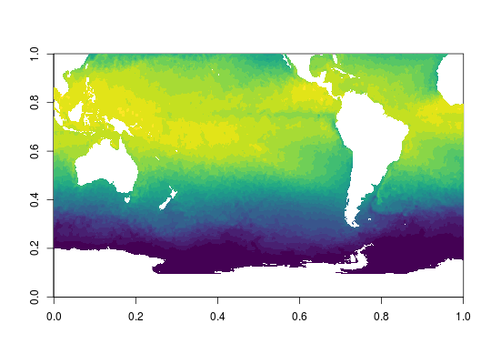
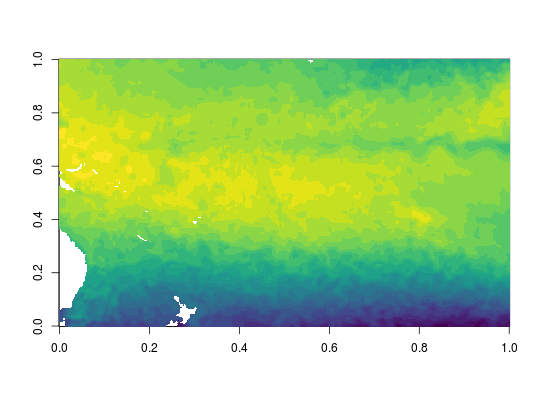

NSE arguments must be named as per the dimensions in the variable. This is a restrictive variant of dplyr::filter,
with a syntax more like dplyr::mutate. This ensures that each element is named, so we know which dimension to
apply this to, but also that the expression evaluated against can do some extra work for a nuanced test.
filtrate(x, ...)
| x | |
|---|---|
| ... |
data frame
cls <- c("#440154FF", "#471164FF", "#482071FF", "#472E7CFF", "#443C84FF", "#3F4889FF", "#39558CFF", "#34618DFF", "#2F6C8EFF", "#2A768EFF", "#26818EFF", "#228B8DFF", "#1F958BFF", "#1FA088FF", "#24AA83FF", "#30B47CFF", "#41BD72FF", "#57C666FF", "#6FCF57FF", "#8AD647FF", "#A7DB35FF", "#C4E021FF", "#E2E418FF", "#FDE725FF") library(ncdump) f <- "/rdsi/PRIVATE/raad/data/eclipse.ncdc.noaa.gov/pub/OI-daily-v2/NetCDF/2017/AVHRR/avhrr-only-v2.20170502_preliminary.nc" x <- NetCDF(f) x#> [1] "Variable: sst" #> [1] "(anom, err, ice)" #> [1] "Dimension:" #> name length unlimited #> 1 time 1 FALSE #> 2 zlev 1 FALSE #> 3 lat 720 FALSE #> 4 lon 1440 FALSEnctive(x)#> [1] "sst"## push sst to the front for an extraction x <- activate(x, "sst") hyper_slab <- filtrate(x, lon = lon > 100, lat = lat < 30)#>#>#>## it's alive, test the extraction library(ncdf4) nc <- nc_open(f) library(dplyr) sst <- ncvar_get(nc, "sst", start = bind_rows(hyper_slab)$start, count = bind_rows(hyper_slab)$count) image(sst, col = cls)## push a different var to the front x <- activate(x, "anom") hyper_slab <- filtrate(x, lon = between(lon, 147, 250), lat = between(lat, -42, 20))#>#>#>anom <- ncvar_get(nc, "sst", start = bind_rows(hyper_slab)$start, count = bind_rows(hyper_slab)$count) image(anom, col = cls)#